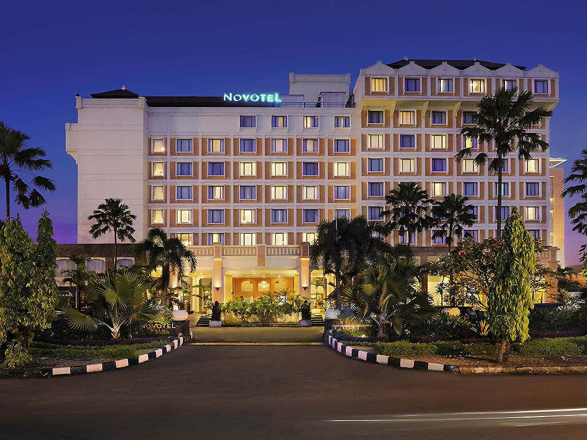

Halo Selamat Datang! Ini adalah halaman Bahasa Indonesia Ricardo 8B HEHE
HOTEL NOVOTEL SOLO
FOTO/PENAMPAKAN OBJEK : 
DATA OBJEK
Nama objek : Hotel Novotel Solo
Kategori : Hotel
Alamat : Jl. Slamet Riyadi No. 272, Banjarsari, Solo, Jawa Tengah, Indonesia, 57141
Nama Pemilik : Sun Motor Group
Tahun Berdiri : 1997
No Telepon : +62 271 724555
Alamat Website : Hotel Novotel Solo Indonesia AllAccor
Rating/kelas : Bintang 4
Deskripsi Tempat
Jumlah kamar: 142
Menu-menu andalan (untuk restoran)Saya tidak bisa mendapatkan menu hotel tersebut dengan rinci tetapi ada penawaran yang terdiri dari menu Ala Carte Box Bakmi Goreng, Ayam Andrawina, Spagheti, Nasi Goreng, Ayam Goreng Kremes dan Nasi Bakar Empal Gepuk.
Fasilitas yang dimiliki
AC TV LED 40” dengan 30 saluran hiburan Shower Kulkas mini Fasilitas pembuat kopi/the Air mineral gratis di kamar Mini bar Meja kerja WiFi gratis Pengering rambut di kamar mandi Telepon
Manfaat dan segmen pengunjung Kelompok usia berapakah yang banyak banyak mengunjungi tempat tersebut? Hotel ini cocok untuk keluarga, wisatawan. Cocok semua umur yang mencari akomodasi mewah dengan lokasi strategis.
Pelayanannya kurang bagus, saya dikacangin pelayan beberapa kali, masakannya menurut saya tidak terlalu enak.
PENUTUP
hasil penilaian Novotel Solo adalah hotel yang nyaman dengan fasilitas lengkap dan lokasi strategis di kota Solo, menjadikannya pilihan tepat bagi wisatawan bisnis maupun liburan.
Saran atau rekomendasi kepada masyarakat
Bagi yang mencari penginapan dengan akses mudah ke berbagai destinasi wisata dan fasilitas berkualitas, Novotel Solo layak sebagai pilihan utama. KAKI Identitas penulis resensi buku (Nama lengkap, kelas) Nama Lengkap : Ricardo Dos Santos Hutauruk Kelas : 8B